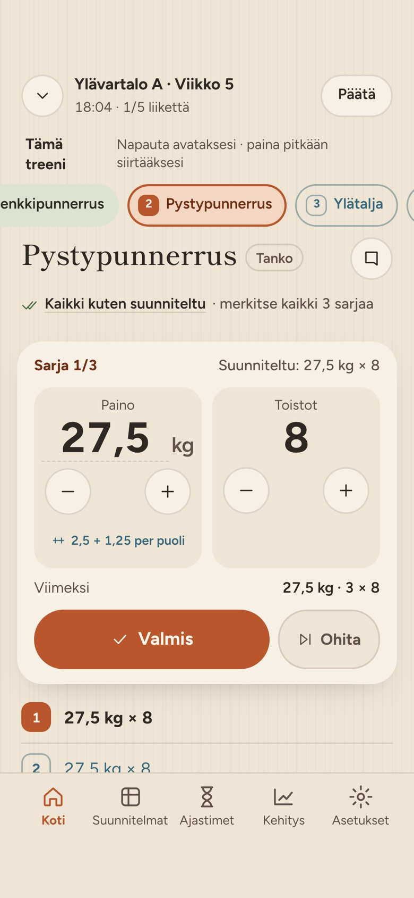
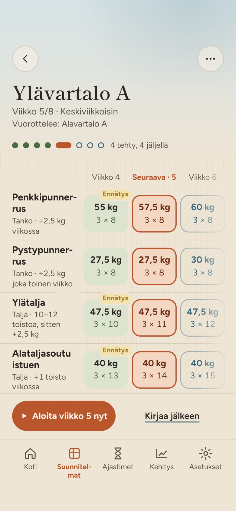
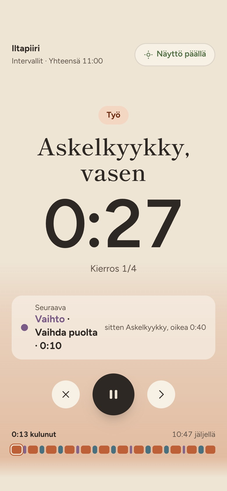
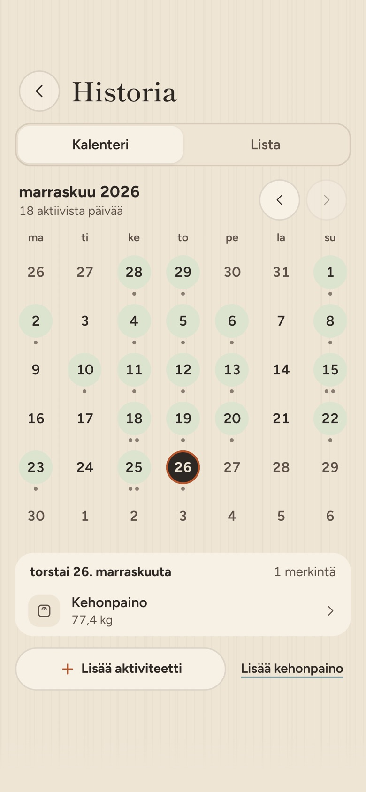

Mikä se on
Kirjaa sarja muutamalla napautuksella.
Haapa on ilmainen, eikä siinä ole rajoja: niin monta rutiinia, liikettä ja treeniä kuin haluat, ja koko historiasi. Isot painikkeet, yksi käsi, eikä mikään huuda.
- Kaikki kuten suunniteltu, yhdellä napautuksella. Suunnitellut painot ja toistot on jo täytetty. Napauta vain sitä, mikä meni toisin.
- Treenaa ensin, kirjaa myöhemmin. Kirjaa salilla treenin aikana tai jälkeenpäin: tänään, eilen tai minä tahansa aiempana päivänä, rutiinin kanssa tai ilman.
- Lepo alkaa itsestään, kun sarja on tehty. Aikaa voi muuttaa −15 ja +15 sekuntia.
- Näe kehityksesi. Arvioitu 1RM, parhaat sarjat ja hillitty ennätysmerkki, kun rikot ennätyksen.
- Levylaskuri kertoo, mitä levyjä tangon kumpaankin päähän laitetaan.

Etenemisruudukko
Tiedät, mitä nostat ensi viikolla.
Liikkeet riveillä, viikot sarakkeissa. Syötä viikko 1, valitse sääntö ja Haapa täyttää seuraavat viikot.
- Valitse oma sääntösi: lisää 2,5 kg viikossa, lisää toisto tai nosta toistoja toistovälin ylärajaan asti.
- Sarjoja eri painoilla. Raskaat sarjat, kevennetyt sarjat tai pyramidi, kaikki saman säännön mukaan.
- Suunnitelma etenee treenien, ei kalenterin mukaan. Jos salilta jää viikko väliin, jatkat siitä, mihin jäit.
- Muuta mitä tahansa solua käsin. Muutoksesi pysyvät ja myöhemmät viikot seuraavat niitä.
- Jaa suunnitelmasi. Lähetä koko ohjelma QR-koodina tai tiedostona tai aloita se Excelissä. Valmentajille ja personal trainereille tai ihan kavereiden kesken.

Ajastimet
Ajastimet samassa sovelluksessa.
Lepo sarjojen välissä, HIIT ja omat intervallit, kuten ”Burpeet 40 s, lepo 20 s, lankku 60 s”. Käytä niitä treenin aikana tai erikseen.
- Valmis malli tai oma. Aloita Tabatasta tai joka minuutti alkavista sarjoista tai kokoa ajastin osista ja tallenna se.
- Vaihtovaiheet muistuttavat vaihtamaan puolta tai painoa.
- Venyttely treenin päätteeksi. 52 venytystä, jokaisella oma ajastimensa, omaan tahtiisi. Aika lisätään treeniisi.
- Toimii myös lukitulla näytöllä. Piippaukset, gongit, värinä ja 3-2-1 ennen jokaista vaihtoa.

Jokainen liikuttu päivä
Juoksu, jooga ja sali samassa kalenterissa.
Haapa ei ole vain salia varten. Kirjaa juoksu, kävely, jooga, uinti, pyöräily tai mikä tahansa muu laji ja näe se treeniesi rinnalla.
- Historian kalenterista näet jokaisen päivän, jona liikuit.
- Muu liikunta muutamalla napautuksella: päivä, kesto ja halutessasi matka tai muistiinpano.
- Miltä tuntui? Merkitse halutessasi mieli ja keho treenin jälkeen ja näe ne kehityskäyrän vierellä.
- Kehonpaino, jos haluat, ja yksi kytkin Asetuksissa piilottaa sen kaikkialta.

Ilmainen, ei seurantaa
Ilmainen, ilman mainoksia, eikä mitään lähetetä minnekään.
Kielet
Suomeksi ja englanniksi.
Jokainen näkymä ja jokaisen liikkeen nimi, desimaalit pilkulla, kuten Suomessa kuuluu. Lisää kieliä tulee myöhemmin.
Ready for your workout?
- Squat (barbell)62.5 kg · 3 × 5
- Romanian deadlift (barbell)55 kg · 3 × 8
Valmis treeniin?
- Kyykky (tanko)62,5 kg · 3 × 5
- Romanialainen maastaveto (tanko)55 kg · 3 × 8